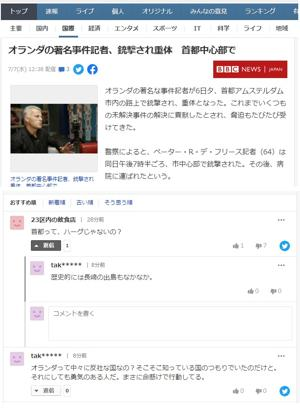
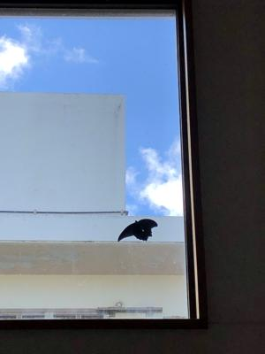
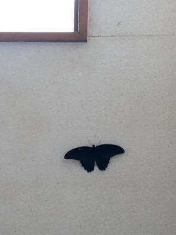

うるがいの話 ある日
最新:
迷い込んだクロアゲハ蝶
うるがいとは 前提知識です
カニの画像をクリックすると『うるがいの話』サイトを表示します

うるがい(ｳﾙｶﾞｲ urugai)とは、『もずくがに』の名前でとても大きくなります。

たながー（ﾀﾅｶﾞｰtanagaa）とは手長えびのことで、何種類かあり大きいのは車
エビぐらいになります。

ぶながー(bunagaa)とは、赤い髪の毛、赤い身体、そして身長は１ｍ２０ｃｍ
ぐらい、川の蟹を食べているの目撃された。場所は沖縄県国頭郡大宜味村のと
ある村僕の隣近所に住んでいる爺さんから、聞いた話です。
2021年07月07日 (水）迷い込んだクロアゲハ蝶
15:44



ネットの記事でオランダの首都はアムステルダムと書いているのに対し、ハー
グではとの書き込みが気になったので調べた。記事は正しい、（デン・ハーグ
は事実上のオランダの首都で、アムステルダムとロッテルダムに次ぐオランダ
第３の都市でもある。）、うむふむ、良く喫茶店などでスマホをいじっている
人達を見かけるが、暇なので調べもせず安易に投稿しているのか、その後の出
島も文脈から意味不明だが（江戸時代、オランダ貿易の出島でつながるが）と
暇な私もこの文を打ち込んでいる。
ぎゃ！、とヨメが叫ぶ（とにかく何でも叫ぶ）。家の中にクロアゲハ蝶々が入
り込んで、外に出たいのか明かり窓に向かって飛んでいる。高い所なので暫く
放置していたが、一時間経ったあとで可哀想になり、何とか外にできないかと
うーん、お、虫取りの網（ゴキブリを取るのに使っている）があるジャン！。
２階の階段から網の棒を伸ばすと何とか捕獲できた。そして外へ・・命どう宝
七夕は、高校１年の７月７日に水難で亡くなった同級生イケハラ君の命日であ
る。イケハラ君のお母さんが、ある年、私の母にあるイケハラ君の二十七回忌
を無事終える事ができたと話していたことも。